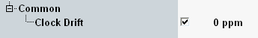

Common Settings
The common settings are independent of the selected scenario. To access them, press the "Config" hotkey and select the "Common" tab.

Common settings
Adjusts the clock of the audio board.
The value is entered in parts per million (ppm). A positive value accelerates the clock. A negative value slows it down.
The checkbox enables/disables the clock adjustment.
Remote command: